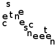
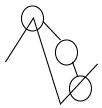

Designing Ouwi
Ouwi is first, and foremost classifiable as a 'non-linear two dimensional writing system.' If I convince you that it's a good idea, but you don't like how Ouwi works, I have tried to break down the issues here so you can design your own. Either way, you should become more conscious here of the problems and possibilities of a language and writing system like Ouwi.
What's a Non-linear 2D Writing System?
- At a scale greater than word-level (i.e. the grammar), visually branching on a sequence is possible, and has discrete meaning.
- NOT Roman, NOT Chinese
- Maybe Mayan? (I don't know enough to say)
Motivations: Why go 2D?
- Desegregate 'text' and 'diagrams'
- Fractal and map-like qualities
- Zoom in/out (automatic 'table of contents'/outline)
- Random access: changes and updates to text can appear where most relevant and preserve the coherency of the text (Borg vs. Human conversation)
- Definition-inspired motivation:
- Branching gives you opportunity to cluster information around a single thing/action/event/etc
- Merging has the converse benefit--have a multitude and tie it together.
- Real world motivation: UML and Flow charts are not expressive enough. They articulate processes well, but not much more. What about history, competing plans, theories, competing theories, hopes, motivations, basic 'fact' reporting, etc.
Diagram-Text switching
Many sensible essays and papers have diagrams which relegate their non-linear points to figures. However, this is disruptive to the reader. First they must jump to the diagram, then to the diagram's caption, then back to the diagram, and then back to the text. Often extra commentary on the diagram is embedded in the text. This discourages people from using diagrams in their writing, even when a diagram is the best way to communicate an idea. Another discouraged form of writing is outlines. People write outlines,but seldom offer it to the reader as an end product (for an interesting exception, see the new edition of The Mythic Man Month )
Map-like qualities of text--Issue of random access
Once we are familiar with a text, we all enjoy the ability to know directly where to go. On the web, hyper-linked tables of contents and search give us 'random access'--i.e. we can jump to the part we want. Non-linear text brings this to all levels. A useful non-linear writing system can 'zoom in' to the part we want.
Even cooler would be a greater flexibility in juxtaposing two parts of a text. A good non-linear writing system would not just juxtapose the two parts (which is possible with two columns, for instance), but dynamically express and expose the closest connections to the two parts.
No text is complete
Any complex document builds upon what came beforehand in the document. How so, though? The author might bring in examples first, and then offer a theory to explain them. Alternatively, the author can explain the theory with the examples following to demonstrate the theory. Either way, other examples could be usefully appended to the text. New facts or revisions may alter the theory.
In our current culture of copyright and revulsion of 'plagiarism' the same thing must be repeated over and over in slightly different ways. In this culture, it helps to express things in words, so we can shift sentences around slightly in order to 'say it differently.' But if we recognize this exercise as silly, then the kind of text we compose can be more derivative but also more formal.
Challenges and Risks
- Risk: Text Fragility (if orientation is significant)
What kind of changes to the text will require a radical restructuring of the text? We should try and make this only happen for radical changes. - Challenge: Collisions and Intersections
Planar graph issues:- Basically you must solve:
K5 and K3,3. These two graphs (and all homeomorphisms) must be either:
K3,3. These two graphs (and all homeomorphisms) must be either:- Impossible
- sample solution
- looping only allowed with 4 nodes or less
- Reducible
- sample solution
- any loop can be reduced to a line, if necessary (probably requires pointers)
- Accepted
- sample solution
- special 'escape' character to overlap; e.g.
- Impossible
- Basically you must solve:
- Challenge: Crowding and scaling
- Can units stretch/scale adjacent to non-scaled units?
- How much does this decrease readability?
- Can scaling work organically?
- Challenge: Relation to Phonology. If the writing system must conform to a linear 'Spell-Out' then there must be a phonetic way to indicate a branch, and how to return to a particular bifurcation.
Non-Challenges
Some things look like problems, but I don't see them as such.
- Won't it take too much space?
It's often mentioned that non-linear expression takes up more space on the page than linear writing. I'll concede that for short sentences, non-linear writing takes more space. For larger texts, however, I believe that non-linear writing has the advantage.
Another response to this issue is that space is going to matter less in the future. In the past, both paper and ink were costly commodities, which needed to be conserved, so achieving maximum density was important. On electronic screens, the economics of making sure every other dot on a page is black (i.e. maximum density) is irrelevant. Currently, we still live in a world with relatively small screens, but this is changing, too. - Why not 3D?
Since video games are evolving into virtual reality, we may ask why we should waste time moving to a 2D system when we might just jump to a 3d system!
We should be sympathetic to a project which uses shadows, perspective, and size as communicative elements, but this is still 2 dimensional, and personally, I prefer to give these elements (along with color) to the designer rather than imbue them with meaning--otherwise you get the complicated problem similar to writing songs for an intonated language.
Another response is that Ouwi is still essentially a 1d language, in that all communication is made up of diverging and converging 1d-strings. The most fundamental part of Ouwi is how it connects words. This is potentially even more versatile in 3d, where a big concern in 2d (overlapping lines) just goes away. So, if the opportunity becomes useful, Ouwi could be 3d in the future.
Choices: Points of Freedom
If you want to design your own 2d writing system consider some of these points of freedom you have available.
- Which 'level' to branch/merge or connect at. These aren't meant to be comprehensive or mutually exclusive.
- Sentences are linked
- Words are linked
- Sentences cross

- Sentences merge
- Sentences are meaningless

- Sentences are linked
- What to branch? This is probably the heart of your design. Good candidates:
- conjunctions
- tense
- noun cases
- subordinate clauses
- Do you want to allow pointers (i.e. disjoint non-contextual references) ?
- Do you want to preserve the ability to tell a sequential story (discrete or conventional start/end points)?
- Spaces or lines? (aesthetic/input considerations: technically, one can map to the other)
Design Principles
These are the principles I've used in developing Ouwi. What's a show stopper that makes me go back to the drawing board and consider more radical options to avoid a problem? What can I handwave away? These are choices that I consider non-universal when approaching the design of a non-linear writing system.
Non-Linearity
Connections and Intersections should mean something
- Must be able to rearrange a graph to avoid non-overlapping connections
- Openness: a great potential advantage of non-linearity is its map-like and graph-like quality
- Random access to concepts expressed in a text
- If texts will change radically upon a modification, this means people have to recreate the entire text. Avoid forced radical changes to text if at all possible--i.e. extra information on a pre-existing 'sentence' should feel like an annotation. Where not possible, can a computer assist the layout?
- Space/Density
- Density of text on a page isn't as important as clarity
- Computer screens are the future. Paper is dead.
- On computer screens people can zoom in/out of a text. This is fine.
- Word constructions that loop closely to each other can look quite puzzling. Sometimes, elegant meanings will encourage this, but I'd rather it be possible to express these things with a single intersection rather than loop around too quickly, which will look like a knot for the poor reader to untie with their mind.
This relates to orthogonality (see below in Language)--a tight construction may feel elegant to the designer, but even though we branch/merge, the point is to allow the user to follow the path they want to--not to make it difficult to see how the path goes.
- Density of text on a page isn't as important as clarity
Language
- Minimal native-set of vocabulary; the grammar should accomodate other languages and symbols
- Orthogonality (words not overlapping their meaning/sense) is desirable, but too much creates obscure constructions.
- Certain things should be more obvious than others. Larry Wall, the designer of the Perl programming language, is famous for observing that nouns should be easily identified (In Ouwi, a circle in a letter sort of serves this purpose). Same for questions and negatives (i.e. saying "jump" should be as different as possible from "Don't jump."
- Simple, more consistant rules are better: across letters, across letters that look the same, across types of intersections, etc.
A Perspective on Ouwi's Evolution
Lines vs. Regions: A Map of Roads, Not Lands
Joints: Line, Space, Intersection
If you were to identify the singular design feature of Ouwi, it would be how letters intersect with others.
The Benefits
- Diverging from a context
- Aligning "conditions" with the direct object
The Problems
- How likely is it that intersection can always be meaningful?
- Ambiguity of who the actor is: The current design does not always put the entity controlling the action at the same end of an intersection. I've tried to make this more consistant, but some intersections are too compelling to make this entirely consistant. If intersection were more closely related to the actor, it would easier to explain this relationship.
Avoided Issues by Design
-
Model I: vs. Model II:  
Ouwi chooses Model I, for which space corresponds to which joint and line segment (when it's intersected). Though Model II might be more inuitive to some people, when figuring out what double-intersections mean associativity becomes a problem. I found when trying to use Model II, the intersection relationships possible tended to be overly bland, and thus less expressive/useful.
I should note that these aren't the only possible options. There are two others, but they are even less intuitive and offer no more benefits that either of these.
Actual History
Joints were a feature fairly early in the development of Ouwi's writing system, but I still discover new aspects of the consequences of intersections.
Most recently,
when I realized there was too little visual difference in the spaces
for do/do not in  , I
decided to allow the first joint to cross lines.
, I
decided to allow the first joint to cross lines.
Radiation
This has the advantages of a relaxed graph (nodes with edges), with a little more rigor: radiation is only allowed from one direction. This makes a problem for layout, but then offers the advantage of defining a 'space' more thoroughly for the context of radiation. Furthermore, it reserves the other side, and the serial context of the letter for defining that context and linking it to the rest of a larger document.
Random Letters
The initial letters were, for all intents and purposes, random. They came out of inspiration during a class on Modern Geometry (taught by Brian Greene at Columbia)--not an informed one: it was a very Jungian take-away. They might as well have been Cyrillic characters backwards, or anything else.
Since then, especially when some crisis appeared, I've revisited my choices, with some admitted sentimental need to keep them as-is. Thus, I've been incredibly conservative in changing the letters.
So, is this baggage that when discarded would make the language better? Not necessarily. The letters represent a variety of types: symmetric and asymmetric, able to intersect and 'passive' letters, etc. Instead of the letters changing, the meanings have shifted to the (hopefully) appropriate type of letter.
Linguistic Spell-out
Goals
- things that should be unambiguous
- nouns: mo and mou and things in the spaces (though there could be an implicit mo in them):


- negation: second space and first joint on meh:

- nouns: mo and mou and things in the spaces (though there could be an implicit mo in them):
- things that should be quick
- tense
- things that should be place markers
- spaces
- untouched corners/lines
- the second branch on a mou letter
Phonetic Mapping
'y' and 'w' correspond to /i/ and /u:/. if we take dipthongs/vowel glides oi,ai,ei to be short for oyi,ayi,eyi, then we can use /i/ with vowels that glide easily for shortening common expressions. Similarly, 'awu' can be used (ewu is already a reserved vowel, so we can't use that unless we came up with an extra vowel). I use these two features to make muu (now /i/) passive intersection and ma (now /u:/) with mi (now /ɑ/) to make past-tense quick, with "a(w)u" and "u(w)a." The rest of the vowels are filled in somewhat arbitrarily.y=passive intersection by muu ('ai', 'oi', 'ei'); also active intersection _by_ muu's point; this is so 'a(y)i' turns into 'ai' "naturally."
w= ([s,f,t,sh,th,g,gh,k,h,?l]u[ɑ,ɪ,e,ou]--aesthetic order: s,h,k,f)
'uwa'=past tense; so does 'au' ; i kind of like 'h' meaning passive radiation...
r= ([f,l,sh,th,g,b,th,ch,?t(if rolled)],v,k--aesthetic order: b,g,l,th,f,v,p)
s= triplets: skr,str,spr; doubles: sl, sr, sn, sf
Consonants available: q @ g ch kh [take 2: n, j]
Consonants used: m ' n z t sh w k s th v y l b r d dh h p
Moon/Sun: [s,z] [m,n] [b,p] [d,t]
| Needed | Avail. | Used | Left |
| all (4) | 2 | [m,n],dh,g,[',th] (6) | -4 |
| 2li's (7) | 1+?1 +s6 | [t,d],w,ch,[h,f],y,[p,b] (8) (tr) | -?6 |
| tli's (10) | 8 | r,k,[s,z],sh,j (5) (rl,kr,rch,rk,rt) | +3 |
| 1,2,8,9 (2) | 3 | l,v (2) | +1 |
| mou (1) | 1 | z (1) | 0 |
| muu's (6) | 6 | kh, q, ng, [ch] (3) (rv,vr) | +3 |
| extra (0) | 4 | +4 | |
| Total: | 27 | 25 |
Integration with the Stories
There are some native story words (consonant-vowel pairs) which I want more accessible, than other native words. That is, those words should be a single syllable and thus, we need to make sure that the consonant meanings for connecting vowels doesn't intersect a particular story's important native words.
For example, the following consonant #'s in the Waters story are all senses which are pretty important (In English, 'see','hear','touch', etc are all a single syllable). Since senses would appear as passive intersection, we conclude:
- i: 2, 5, 8, 11, 14, 17, 20, 23 shouldn't be for passive intersection (1 and 2, anyway) since the senses should be available (I see a bird: mo 'i?it-bird) [now: ', z, gh, k, j, y, n, h]
distributing the rest:
[t,d]=2li; [p,b]=2li; [n,ng]=universal (muu free on both); [',th]=universal;
starting "m ' n" gives it a sonic quality, but m and ' are both universal-oriented.
| #'s |
|
|
|
|
|
|
possible | letters | tries | Final | |||||
| 1 | X | X | X | X | X | extra | ' | m | m | m | |||||
| 2 | X | X | X | X | muu | g,kh,q,??? | t | ' | ' | ' | |||||
| 3 | X | X | X | muu | g,kh,q,??? | q | n | n | n | ||||||
| 4 | X | X | X | X | X | extra | f | d | t | h | |||||
| 5 | X | X | third leg item | r,k,s,sh,j,??? | r | k | s | p | |||||||
| 6 | X | X | X | ip2? | ch | ch | ch | ch | ch | ||||||
| 7 | ? | X | X | 1,2,8,9 | l,v,? | l | l | v | l | ||||||
| 8 | X | X | 1,2,8,9 | l,v,? | v | v | l | v | |||||||
| 9 | X | X | 1,2,8,9 | l,v,? | th | t | d | th | |||||||
| 10 | universal | m,dh | m | g | dh | g | |||||||||
| 11 | X | X | third leg item | r,k,s,sh,j,??? | n | f | b | k | |||||||
| 12 | X | X | muu | g,kh,q,??? | g | h | f | kh | |||||||
| 13 | X | third leg item | r,k,s,sh,j,??? | d | th | r | f | ||||||||
| 14 | X | X | third leg item | r,k,s,sh,j,??? | sh | j | th | r | |||||||
| 15 | X | X | muu | g,kh,q,??? | kh | q | q | q | |||||||
| 16 | X | X | X | mou | z | z | z | z | z | ||||||
| 17 | X | X | ? | third leg item | r,k,s,sh,j,??? | k | sh | sh | j | ||||||
| 18 | X | X ↓? | ?third leg item | (r,k,s,sh,j,???) | h | h | b | ||||||||
| 19 | X | X | X | extra | p | b | p | t | |||||||
| 20 | X | X | third leg item | r,k,s,sh,j,??? | j | r | k | sh | |||||||
| 21 | X | 2nd leg item | y | y | y | y | y | ||||||||
| 22 | X | X | X | muu | g,kh,q,??? | b | kh | kh | d | ||||||
| 23 | X | X | third leg item | r,k,s,sh,j,??? | s | p | j | s | |||||||
| 24 | universal | m,dh | dh | dh | g | dh | |||||||||
| 25 | X | third leg item | w | w | w | w | w | ||||||||
| 26 | X | X | extra | @ | @ | @ | @ | ||||||||
| 27 | ? | X | muu | g,kh,q,??? | ng | ng | ng | ng | |||||||
| #'s |
|
|
|
|
|
|
|||||||||